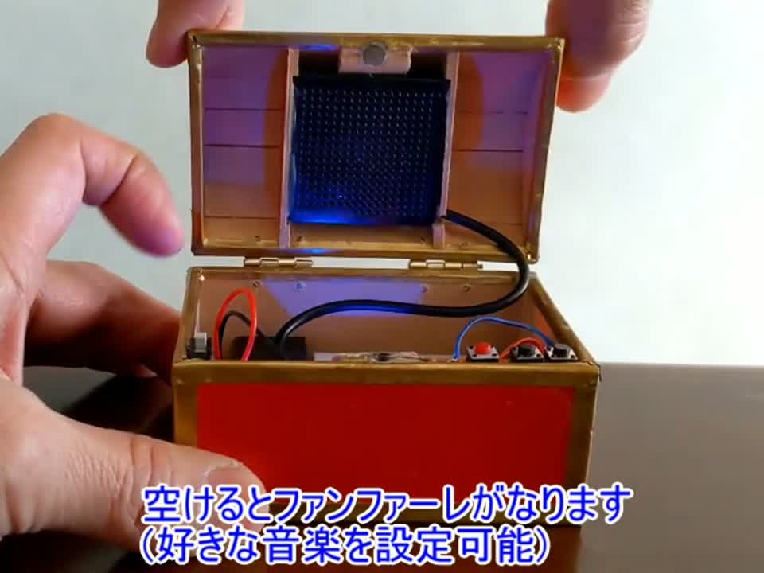

宝箱型ミュージックプレイヤー
開けるとファンファーレが鳴る宝箱です。大きい方（12cm）が2018年、小さい方（4cm）が2021年8月の作です。
箱も手作りです
箱は既製品ではありません。MDFをNC加工機で切り出して、木工用ボンドで組み立て、赤と金に塗装しました。ドラクエの赤い宝箱がモチーフです。

仕組み
中身はArduino NanoとDFPlayer Miniで、蓋の裏にスピーカーが付いています。開けるとファンファーレが鳴ります（好きな音楽を設定できます）。TFカードにMP3を入れておけばミュージックプレイヤーとしても使えて、ボタンで曲の送り・戻し、長押しで音量の操作ができます。